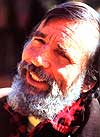

While painting himself as “a libertarian, an agrarian anarchist, and a dedicated scofflaw”; Edward Abbey is described by others as an extraordinarily perceptive and talented writer, a freethinking philosopher, a concerned and outspoken environmentalist, an adventurer, teacher, and hardcase desert and river rat. Abbey is the author of six novels, including The Brave Cowboy (which was made into the Kirk Douglas movie Lonely Are the Brave ) and the “scofflawish” The Monkey Wrench Gang . He also has nine nonfiction books to his credit, the first of which-penned in the mid-1960's-was the pro-wilderness masterpiece Desert Solitaire . Mr. Abbey's writing credits are rounded out by scores of highly acclaimed essays evidencing a rare eloquence and a scorching satirical fire. And finally-bringing his acclaim closer to home-he was one of the top runners-up for MOTHER's 1983 Environmental Hall of Fame.
Like many of those people who number among the West's staunchest supporters, Abbey was born in the East, spending his first 17 years in the Allegheny Mountains of Pennsylvania. He got his initial glimpse of the American West in 1944 while on a solo hitchhiking tour that took him to California and back. That trip was followed by two years of service with the U.S. Army in Italy during World War II.
In the post-war 40's, our interview subject divided his time between attending the University of New Mexico in Albuquerque and roaming the Southwestern outback. Upon receiving his B.A. in 1951, Abbey returned to Europe-this time to Edinburgh, Scotland-on a Fulbright fellowship. Afterward, he headed back to UNM to continue his graduate studies. And in 1956, after writing a thesis entitled “ Anarchism and the Morality of Violence”; he received an M.A. in philosophy.
His formal studies completed, Ed Abbey began his career as a working writer (in his own words, “I was one of those writers who had to work for a living”). For nearly two decades he would augment his writing Income by serving as a seasonal park ranger and fire watch at various wilderness outposts around the country, including Arches National Park, Utah; Organ Pipe Cactus National Monument, Arizona; Petrified Forest National Park, Arizona; Glen Canyon National Recreation Area (Lake Powell), Utah; Grand Canyon National Park (North Rim), Arizona; Death Valley National Monument, California; and Glacier National Park, Montana.
Over the course of his many years of work, travel, education, adventure and misadventure, Abbey cultivated an intense love for the wilder parts of America, especially the Four Corners area where Colorado, Arizona, New Mexico, and Utah meet. Consequently-and though he has written about locales as geographically diverse as the Appalachian Mountains, Australia, Mexico, and Alaska-the bulk of his writing centers on the slickrock canyons, arid mesas, and cactus freckled deserts of the American Southwest.
Today, at a robust 57, Ed Abbey makes his home near Oracle, Arizona, an hour's drive north of Tucson. It was there, in the northern reaches of the vast Sonoran Desert, that MOTHER's Associate Editor Dave Petersen (himself a transplanted Westerner) was fortunate enough to track down, interview, and photograph the reclusive desert rat and wilderness sage.
If you're not already a “Cactus Ed” fan, you're about to discover that-like his fellow denizen of the deserts, the western diamondback rattler-the noises Mr. Abbey makes often constitute warnings worthy of serious consideration.
PLOWBOY: Mr. Abbey, you've been called a prophet, a rebel, a “wild” conservative, an agrarian anarchist, and lots of things we can't print in THE Mother Earth News (restricted) . Do you feel that any of those labels fit?
ABBEY: Probably the ones you can't print fit best. But sure, I guess I'm a “wild” conservative, if you take the word wild to stand for wilderness. But the term conservative can mean almost anything and needs to be clarified. To me, it means one who wants to conserve what is best in our society and in our land. In that sense, I'm a conservative. Conservative and conservation -the words go together and so should the attitudes.
I'm also something of an anarchist, because I learned long ago to distrust the government, and not only the government but all big institutions: big business, big military, big cities, big churches, big labor unions . . . any institution that grows so large that it's no longer under the control of its membership. My kind of anarchism is no more than democracy pushed as far as it can be pushed, government by the people, decentralized power in all its forms.
PLOWBOY: But what, exactly, is an agrarian anarchist?
ABBEY: An agrarian anarchist could also be called a Jeffersonian anarchist. I think Jefferson was fundamentally right and Alexander Hamilton was fundamentally wrong. Theirs was the great division of opinion with which America began. Jefferson maintained that the best, the freest, the most democratic society would be one made up of more or less independent, self-reliant freeholders, people like farmers who are able to support themselves rather than become employees of some big institution. In a truly free and democratic society, all of us would be owners of property. It's hard to be free when you're dependent on big institutions to provide you with a livelihood. Ideally, I think that each family should own enough land-rangeland, farmland, or forestland-to support itself.
PLOWBOY: But do you think a significant number of people in today's society would even be interested in living that sort of agrarian, self-sufficient life?
“No one should becomea full-time crusader for anything. I've found that it's best to be a half-time crusader, a part-time fanatic . . . ”
ABBEY: I believe that it's still a sought-after American ideal, though it has certainly become quite difficult to achieve. Most of us, I suppose, have given up any real hope of ever living that way. It takes a lot of money these days to buy a real, self-supporting farm or ranch. But still, I think that self-sufficiency is always possible to some degree, and I'm all for those who are giving it a good try. You can still support yourself on even a small plot of land . . . if you're willing to work hard enough, if you're clever enough, and if you're willing to give up a lot of things and live simply. It's a worthy ideal, and I admire the people who do it-including those who attempt to do it and fail.
But realistically, for most of us today it probably makes more sense to strive to be partially self-reliant and self-supporting and to supplement our incomes with some sort of part-time work. I supported myself-and occasionally a family-most of my life with part-time and seasonal work while trying to make it as a writer.
PLOWBOY: Well, now you have made it as a writer, and probably your most controversial book is the novel The Monkey Wrench Gang, which deals with a sort of ecological anarchy, in the form of active resistance to industrial encroachment upon the desert Southwest.
ABBEY: Right.. And in that novel I tried to make a clear distinction between sabotage and terrorism. My “monkeywrenchers” were saboteurs, not terrorists. Sabotage is violence against inanimate objects: machinery and property. Terrorism is violence against human beings. I am definitely opposed to terrorism, whether practiced by the military and state-as it usually is-or by what we might call unlicensed individuals.
Sabotage is a traditional method for people without military or political power to resist encroachments on their lives and livelihoods. The word is derived from the French sabot, meaning wooden shoe. When workers in the nineteenth century textile mills of England and France felt they were being abused by having to work 12 and 16 hours a day, they'd sometimes slow down production by throwing their wooden shoes into the machinery. I think this form of illegal resistance is justified in certain circumstances-when, for example, no other means of resistance has succeeded.
Certainly, most of us feel that we would be morally justified in physically resisting the invasion of our homes or an attack on our loved ones. And if all the details are just right, that sort of resistance is sanctioned by law. So when a place that you love-a piece of public land, be it desert, seashore, mountain, or forest-is being invaded by strip miners and road builders and clear-cut loggers, and when all the usual political means of persuasion, all the legal means of preventing this invasion, have failed, then I think you may be morally justified in adopting illegal tactics. In other words, sabotage.
Of course, this decision involves a number of difficult and dangerous questions. For example, is a small group of people, a scattering of individuals, justified in taking the law into their own hands in such cases . . . even if the majority of their fellow citizens may support the industrial invasion or at least be indifferent to it? In the final reckoning, we all have to rely on our own consciences to decide what we do and what we don't do. If we decide to be completely lawabiding citizens and never violate the law, that in itself is a moral decision, and we have to take responsibility for that decision, even when the law is doing evil things. It's certainly easy enough to see in extreme cases-such as those that faced citizens of Nazi Germany and still face people in Communist Russia-that disobedience to the civil law can be obedience to a much higher, moral, law.
A few people have always had to stick their necks out and take a chance on getting their heads chopped off on these moral questions. Human slavery in the U.S., for example, was always supported by the majority . . . or at least accepted by a majority. Abolitionism began as a minority movement, and the abolitionists often resorted to illegal measures. Most of us today would say that those people were morally justified in what they did, even though it was illegal at the time. So strict legality isn't always a very good standard by which to judge right and wrong.
PLOWBOY: Do you feel that what you've called “ecological sabotage” can be effective in slowing or stopping industrial encroachment, if people do choose to employ it?
ABBEY: To be effective, to make any real difference, it would have to have the support of many, many people. On a small, isolated scale, it won't do much good . . . except for the feeling of personal satisfaction it might provide.
PLOWBOY: How could this large-scale support be gathered when the activity it would be endorsing is illegal?
ABBEY: It would have to start as an underground movement. You certainly can't expect the official media to support sabotage; the newspapers and television aren't going to advocate it. And along those lines, I think there is far more ecological sabotage going on right now than most of us ever hear about. Generally, it's hushed up. I know of enough things that have happened here in the Southwest to believe that's true. The incidents aren't reported because it's a contagious idea: If people in North Carolina hear about certain things going on in Utah, they might decide to adopt the same tactics themselves.
Here's a specific example: A few years ago, some farmers in the Great Lakes area objected strenuously to the building of high-voltage power line towers on their private property. They objected politically, in the courts, in every legal way they could think of, and nothing did any good; they were always overruled by the state government. So they finally broke out their monkey wrenches and began dismantling the towers. When all the legal procedures had failed to stop the construction, the farmers resisted by direct, illegal action.
And win or lose, I think that every time people resist as strongly as they can, without committing violence against other humans, their resistance helps in the long run. It makes industrial invasion of the wilderness or farm or whatever sanctuary more expensive; more difficult, more debatable the next time it's brought up.
PLOWBOY: Last summer you spoke at the Earth First! rally at Jackson Hole, Wyoming, where the group's supporters had gathered to protest Getty Oil's plans to carve more oil-exploration roads into the wilderness. What sort of an organization is Earth First!?
ABBEY: We call it a “movement”, rather than an organization. At the time of that rally, its hard-core supporters numbered something like 3,000. It's headed by a fellow named Dave Foreman, from up in Ely, Nevada, who publishes a little monthly magazine called The Earth First!Journal, for which I've written a few pieces. Earth First! tries all sorts of things to resist the destruction of the wilderness, stopping short of openly engaging in sabotage. Most of their public activity is in the form of civil disobedience: blocking road-building projects with their bodies, standing in the way of bulldozers, getting themselves arrested. I call it “conditional” civil disobedience. It involves the same sort of tactics used by nuclear protesters all over the world, methods that were also common among Civil Rights activists in the 60's. It's a way of trying to make a point, of gaining publicity, of slowing down destructive processes, and perhaps of changing the minds of enough of the public to finally gain popular support for a cause.
But again, I don't know that anyone in Earth First! actually engages in sabotage, even though they do a lot of talking about it-about the ethics and morality and even the tactics of ecological sabotage-in their little magazine. And this seems a good place to stress that the individual has to decide if he or she is sufficiently morally outraged to engage in an illegal activity on behalf of the environment. You have to realize that you're taking great risks in doing so, too. You're in for all sorts of legal harassment if you get caught, possibly a jail term, and you might get injured or even shot if some company guard or night watchman catches you at work. Furthermore, you also have to consider the effects your action might have on the environmental movement as a whole. It might be very bad public relation, and anyone who wants to engage in ecological sabotage, in illegal activities, should take the full moral responsibility for it. Don't blame me, Earth First!, The Monkey Wrench Gang, or a magazine article you may have read somewhere. If you take action, it's your decision and your responsibility.
PLOWBOY: Short of ecological sabotage, what do you see as the best course of action for people who want to do something, who want to protect the environment, who want to make themselves heard?
ABBEY: Well, there are many ways to resist industrialism and its related ills. You can simply contribute money to the Sierra Club. That's the safest and most respectable and-who knows?-maybe even the most effective way to say what we want to say. The environmental movement is involved in a big, broad war, with many battles going on along many fronts . . . hundreds and thousands of battles and fronts. So anyone who is concerned should jump into the war on whatever sector he or she cares about most and use whatever means are acceptable on an individual basis. I'm sure you'd do just as much good by supporting the Wilderness Society or Defenders of Wildlife or the National Audubon Society as you could by crawling around at night under bulldozers, draining crankcases. Of course, from my experience, it's nowhere near as much fun.
The whole situation can be overwhelming if you take a close look at it. There are so many good battles, so many good causes. Support Amnesty International if you object to the torture of political prisoners. Support the nuclear freeze movement. Help to put the right sort of politicians into office. And on and on. I happen to live in the Southwest, and I love the land out here so much that most of my own effort has gone into trying to save what is still good and true and unspoiled in the American West. If I lived in Appalachia, I'd be trying to slow down the strip-mining and clear-cutting and river-damming.
But don't start worrying about all these things, or you'll go nuts. No one should become a full-time crusader for anything. I've found that it's best to be a half-time crusader, a part-time fanatic, and to save the rest of the time to try to maintain my sense of humor and my emotional balance, in an effort to stave off ulcers and heart attacks. We should all reserve a great part of our time and our physical and emotional and intellectual energy for play and personal pleasure, for family life, for travel and reading, for whatever we enjoy doing the most.
To sum it all up, I think that each of us should jump into the battle where we feel most needed or where we feel that we can do the most good, and use any means that are acceptable or preferable on a personaldecision basis.
PLOWBOY: What does Edward Abbey most enjoy doing when he's not crusading to save the wilderness?
ABBEY: I enjoy simply enjoying the wilderness, for the most part. And writing, especially books. I enjoy the art of literature. The creation of good art is becoming more and more my primary concern. I'd like to write some books that people would find interesting a century from now. And I'm interested in my family and friends. And, of course, I read a lot. In fact, having been a philosophy major back in college, I probably read too much.
PLOWBOY: You've described your own philosophy of life-your religion-as “Eartheism”, which seems to be a verbal play on atheism. What exactly is Eartheism?
ABBEY: I suppose you could call it a basic loyalty to our planet, a reverence for our lives and the lives of our families and friends, and a respect for the lives of the animals and plants that exist around us. Those are the only things that we can know well enough to revere, I think. So Eartheism is a love for and a faithfulness to the earth, to the real everyday life that we know, to all living things, and even to the rock that we stand on and the air that supports us and makes our lives possible.
I wouldn't call myself an atheist because-even though I admire the audacity, the boldness, and perhaps the basic intellectual honesty of that position-I think it's a little risky. It's a little too definite. After all, they could be wrong. There are just too many mysteries in life and in the world and in the universe to say with any certainty that there is no God . . . or -in my opinion-to endorse simple gods like the Christian conception of an all-knowing, all-wise, all-powerful being.
In fact, mystery is the one thing that we can be sure of. The unknown. Perhaps the forever unknowable . And I would be willing to call that God, except that the term God seems to me too limiting. We don't know enough to be atheists, just as we don't know enough to be theists. I can't accept either position wholeheartedly. Also, most of those who call themselves atheists are a silly, semi-fanatical bunch, not unlike the worst of fundamentalist Christians. Madalyn O'Hairs are, to me, no more appealing than Jerry Falwells . . . they're just fundamentalists of a slightly different stripe.
In short, I don't care for institutionalized beliefs or attitudes of any sort-religions and philosophies or otherwise-and in my writing I strive to offend them all. And I usually succeed.
PLOWBOY: You seem at times even to criticize groups or types that at other times you have openly admired. For instance, your novel Fire On The Mountain contained high praise for at least one rugged, independent Western rancher. And at other times you've blasted his real-life counterparts rather harshly.
ABBEY: Oh, not across the board, not all of them, not as individuals. I have ambivalent feelings about the cowboy/rancher. So much is-so much at least was -admirable about that way of living and making a living. I still know a few cowboys, some retired now, and a few old ranchers, and they're lovable, admirable, strong, solid people. But as a class, as a group, cattle ranchers and wool growers are disgusting. They're particularly bad here in the Southwest. Real mossbacks. Their minds are still set back in 1880. They still think they're living on some kind of a frontier. As a class, they are selfish, greedy, and shortsighted. But as individuals, many of them that I've known were likable, sometimes even lovable, people.
In general, though, I feel that individuals tend to be much better than the institutions of which they are a part. Remember how President Carter used to talk about having a government as good as the people? I think that's an impossible dream. People are always better than their government. There's something in the very nature of the structure of big institutions that brings out the worst in people.
PLOWBOY: Let's talk about the ranchers for a moment longer. Would you say that the cattlemen and wool growers who lease public lands-Bureau of Land Management and national forest lands-are doing an adequate job of acting as stewards of the public domain?
ABBEY: The beef and sheep industries have perhaps done more damage and destruction to the American West than even the miners or the loggers or the dam builders. The people involved in those businesses think they have the right to exploit the public lands without any limit. And not only do they exploit the land, they're even subsidized to do it! They pay undervalued grazing fees, have fences and roads built for them at the taxpayers' expense, and even have the mesquite and junipers chained off or poisoned off-also at our public expense-so they can run even more of their hooved locusts on the public land. With a few honorable exceptions, Western ranchers have been overgrazing public lands unmercifully for a century now. And not only have they overgrazed the land, but they've killed off as much of the wildlife as they could while they were at it. They've been responsible for the building of too many fences, the digging of too many stock ponds, and the boring of too many wells.
PLOWBOY: When you say the ranchers have killed the wildlife, do you mean intentionally, or inadvertently through overgrazing?
ABBEY: Both. But in the case of predators it's been deliberate . . . that's always been a basic operating policy of stockmen: Kill the wolves, and when they're all gone, start in on the coyotes.
PLOWBOY: Using Compound 1080, cyanide, and other poisons?
ABBEY: They do it any way they can: poisons, traps, rifles and shotguns-often shooting from helicopters-and killing pups in their dens. The wolf, coyote, bear, bobcat, mountain lion, eagle-virtually all predatory animals-have always been regarded as enemies by wool growers and cattlemen . . . again, with a few honorable exceptions. If sheep ranchers are suffering from predation, it's because there are far too many sheep on public lands, especially up in the high country where it's difficult to protect them. They need more sheepherders, for one thing. And the ultimate solution would be to get the livestock population down to a manageable level.
“I enjoy stirring people up, and I've always enjoyed making certain people angry.”
PLOWBOY: Let's use that mention of overpopulation to shift the conversation back to the human animal. You've said that unless we can control and reduce the world's population soon, we'll never be able to solve any of our problems. Do you see overpopulation as the root of all evil, so to speak?
ABBEY: Yes, I do. But there are so many factors that encourage people to breed that it's hard to place the blame on individual families. Industrialization, for example, makes it possible to exploit a given land area much more rapidly and thoroughly, and thereby support a much bigger human population . . . at least for the short term, for a few centuries. Population and industrialization work together and reinforce each other. A growing population creates demand for more industrialism. Growing industrialism makes possible a bigger population, at least temporarily. But in the centuries to come, I think we'll probably see some sort of catastrophic human die-off as a result of that treadmill.
PLOWBOY: Do you think that's inevitable?
ABBEY: Oh, I'd hate to say inevitable. Maybe the technologists are right; maybe they can create conditions that will support ten billion people on Planet Earth, or even far more than that. But if they did, I think this would be an utterly hideous world. I have no desire to live in a place like that. It might be possible, for example, to farm the entire land surface and the oceans, too. We could support far more humans that way. We could process sewage into bouillon cubes, eat algae, seaweed, plankton.
All those things are theoretically possible. But the very fact that they could actually happen is horrifying to me. It seems like it would be a wretched world to live in . . . billions of humans packed into some sort of planetary food factory. Buckminster Fuller thought it could be done. But the question is, should it be done? Who would want to live in such an ugly world?
PLOWBOY: How can such an eventuality be prevented, given current trends?
ABBEY: By discouraging population growth and resisting the antiquated institutions that encourage and allow it. And that's yet another good cause for people to jump into, if they don't want to crawl around under bulldozers. Let them support Planned Parenthood, or Zero Population Growth, or better yet, “ negative population growth". And we should revise the taxation system to penalize big families and reward single people or childless couples. There are far too many of us here already.
PLOWBOY: In your most recent novel, Good News, you paint a bleak picture of an America that has collapsed . . . not as a result of nuclear war, but from its own overgrowth and consequent internal rot. Do you see that as the way the catastrophic human die-off that you mentioned a moment ago might come about?
ABBEY: Oh, I think I'm a mixture of optimist and pessimist on that point. I believe that, in the long run, things will turn out all right. In the short run, though-say within the next century or so-we're probably in for a lot of misery, a lot of strife and conflict . . . assuming a nuclear war doesn't come along first. But barring nuclear war, I imagine the human situation is going to become much tougher over the next 50 or 100 years for almost everybody, everywhere. And population growth is part of the problem. If you have more and more people, you also have more and more need for regulation in the form of government, laws, police, prisons. One of the biggest problems here in Arizona right now, for instance, is trying to raise money to build more prisons. That's part of what they call "growth". Industry grows, the population grows along with it, and prisons have to grow with both. But my novel Good News is just a fantasy, a picture of what could happen, given current trends and tendencies.
PLOWBOY: I didn't see much evidence of good news anywhere in the book.
ABBEY: There's a certain irony in that title because, to some extent, I would regard a major disaster like the one described in the book as beneficial. I'd like to see the collapse of the military/industrial system in our country and in all the world. I think that may be the only way we can clear the ground for a fresh start and a better way of living together. And we might have to endure some catastrophies and disasters in order to have that better chance, that opportunity.
But notice that I qualify all that with may and might. I still think there's an opportunity for improving things in our own country by rational, sensible, political means. I think a majority of Americans would like to stabilize the population. They'd like to cut off the mass illegal immigration, to provide some sort of job security for everyone, to provide decent homes for everybody. But then again, I don't know how committed the majority are to personal liberties and freedom. A lot of people have never even heard of the Bill of Rights. Or if they have heard of it, they don't really approve of it. But if we got on it right away, things could still be turned around by reasonable, peaceful, even legal means . . . if enough of us wanted to do it.
PLOWBOY: Do you believe such a turnaround will come about before it's too late?
ABBEY: I'm doubtful. As I said, I'm pretty pessimistic about the short run . . . say, the next hundred years. And I have children and friends with children, and that's what I regret most-that those young people won't be able to enjoy the kind of life I've had. They won't have as much physical freedom, as much open space to play in, and they probably won't have as much political freedom. It seems that the bigger everything gets, the less the individual counts. And the less, also, that an individual's opinions and feelings and ideas matter.
In a healthy, small town, every citizen counts for something, has some sort of role, even if he's just the village wino. At least he's a character, at least he's recognizable as an individual. However, in a great city-in fact, in most of our society-individuals are devalued, lost. They become smaller and smaller and finally disappear.
So that's why I say the novel Good News is partly a prophecy of what kinds of things might take place in a major disaster and partly a hint that the same disaster might turn out as a fortunate development in the long run . . . might become the ironic good news.
PLOWBOY: Let's make a rather abrupt jump back a couple of decades to Desert Solitaire, your first nonfiction book dealing with the problems facing America's shrinking wilderness. In that book you said that the National Forest Service and the National Park Service were suffering from a complex you called “Industrial Tourism”: That is, they were trying to run our national parks and forests too much like businesses. Has that situation changed any since the mid-60's?
ABBEY: Unfortunately, the NFS and NPS are still too much under the influence of commercial interests: the concessioners in the parks, and the loggers, miners, and stock industry in the forests. They're aware of the problem these days, at least, and have taken some tiny steps, made some token efforts, toward reform. But the general tendency is still in the opposite direction: to build more facilities for motorized tourism in the parks and to open more and more of the national forests to commercial exploitation.
PLOWBOY: Is the current situation just the continuation of a long-term trend, or has it been accelerated under the present administration?
ABBEY: It's the continuation of a long-term trend that proceeds at different speeds.
PLOWBOY: Depending on who's driving?
“ . . . many of us are going to miss old James Watt .... He was a colorful character who always had something ridiculous to say on any public occasion.”
ABBEY: Well, I can't think of an instance in the history of America where a piece of developed land has been reclaimed as wilderness. Instead, we have a continual, ever-growing process of compromise, whereby inch by inch, foot by foot, and mile by mile the wilderness is being whittled away. Every time the miners or the loggers or the road builders want to get at some new chunk of wilderness, there's a big struggle and controversy and hullabaloo, and then the solution is what they call a “compromise”; that is, the environmentalists give up part of the wilderness in order to save the rest. Then five or ten years later the developers are back again, wanting another hunk of that same piece of public land.
And in recent years under the Reagan Administration, of course, this process has been greatly speeded up. If we get a Democrat elected this fall, maybe it will be slowed down a little. But it's only a difference in speed. It's part of the pressure of a growing population on a limited land surface. More and more people want the affluent life, and that desire is making more and more demands on the land, requiring that more and more of the natural scene be sacrificed to industrial development.
PLOWBOY: Along those very lines, there's been some furor lately about the Department of Energy wanting to establish a nuclear waste dump near the entrance to Canyonlands National Park in Utah. Considering your special love for that area, that possibility must strike a hard blow.
ABBEY: Oh, I try not to be disturbed by it. After all, it's only outrageous, criminal, and an almost personal attack on me!
PLOWBOY: Do you think the DOE will be successful?
ABBEY: It's doubtful. There's already a lot of resistance, even in the United State of Utah. A lot of people there seem to be opposed to the nuclear industry because of their unfortunate experience with atomic testing and because of their exposure to years and years of government lying. The only people in Utah who actively support the proposal for a nuclear waste dump at the entrance to Canyonlands are local businessmen in two counties, who see it as the usual shot in the arm for the economy. For a few years, they'll make a lot of money. That's why they back it. It's the only reason they back it, and they'll admit it.
Let me give you a specific example of that attitude. There's a car dealer in Moab, Utah-the town that's nearest to Canyonlands-by the name of Harold Gaither. Old Harold is a very eloquent fellow. He has a fine way with words. I envy him. He said something about national parks attracting environmentalists like a carcass attracts blowflies. That's very well said. I only wish I'd thought of it first. But anyway, Gaither also said-publicly, to reporters-that if this new waste dump is built near Canyonlands, he'll stand to make at least an extra quarter of a million dollars over the next few years. And I guess he's so dedicated to the religion of making money that he's not even aware of how bad that makes him look to the general public. He takes it for granted that making a lot of money is a noble idea. And true, that concept seems to be part of the Mormon religion. But Mormons aren't as dumb as some of their leaders try to make them. They've discovered through bitter experience that the nuclear power industry and the nuclear warfare industry are dangerous. It's probably because of Mormon opposition, for example, that we were able to succeed in keeping the MX missiles out of the deserts of western Utah and eastern Nevada . . . at least for the time being.
But to answer your question, no, I don't think that the DOE will be able to get away with building a nuclear waste dump near Canyonlands. When they actually try to do it, it will become a national issue and there'll be so much opposition stirred up in the public at large, and in Congress, that I can't think that the DOE will be able to get away with it-even if Harold Gaither and Calvin Black and a few other locals support it.
PLOWBOY: As you've just evidenced, you name names and pull no punches when expressing your views. Have you ever received any threats as a result of being so outspoken in favor of the environment and against those who you feel would do it harm?
ABBEY: Not many. I lived in Moab for about five years during the 70's, and in all that time I received only two anonymous threat. letters, each saying that for my own good and the health of my family, I should get the hell out of Moab. But I disregarded the threats, and nothing ever happened. Of course, some of the articles I've written for magazines have certainly drawn heated response, sometimes from important and powerful people-politicians, corporate executives, and such. Sometimes they even wish evil things to befall me, but none of them have ever threatened me directly.
PLOWBOY: That's encouraging.
ABBEY: Well, you know what the environmental backlash is: The people who are opposed to environmentalism generally have lots of money at their disposal, and they have certainly overwhelmed the public with their point of view through advertising and through the support of writers who should know better, but maybe don't . . . who maybe even sincerely believe what they write. William Tucker, for example, is one of many who have written books attacking the environmentalist position in recent years.
I wrote once that environmental journalism isn't a very cheerful field of work. But I guess there was a little self-pity in that remark. I've had a hell of a good time with it, actually. I enjoy stirring people up, and I've always enjoyed making certain people angry. I write to amuse my friends and to aggravate our enemies, to give them ulcers, if possible. I make terrible threats that I have no means of carrying out . . . like getting rid of their Glen Canyon Dam. I like to make the opposition worry and lie awake at night, force them to hire more security guards, and the like.
PLOWBOY: OK. Let's talk about Glen Canyon, the dam, and Lake Powell. For those of our readers who may not be familiar with it, Glen Canyon Dam is located in extreme northern Arizona, near Page, and backs up the Colorado and San Juan rivers nearly a hundred miles into southeastern Utah. Why, Mr. Abbey, are the dam and reservoir so hated by so many Westerners-including, and perhaps especially, you when Powell is considered by some to be the most beautiful lake in the West?
ABBEY: Well, I'm sometimes guilty of a touch of hyperbole in things I write, but in this case I think I'm substantially correct. Even though some might argue that Lake Powell is the most beautiful man-made reservoir in the West, it buried one of the most beautiful canyons in the West. Glen Canyon wasn't quite as big, deep, or spectacular as the Grand Canyon, but it was equally, or maybe even more, beautiful from certain points of view. Glen Canyon was a natural paradise, an Eden. For almost 200 miles the Colorado River flowed through it with no serious rapids. Anyone could float it, no matter their skill level. And you didn't need any expensive, special boats or equipment. It was beautiful, and it was alive, with the river lined on both sides with groves of cottonwoods and willow that were home for all kinds of bird, mammal, and insect life. You could live forever on the catfish in the river. And anyone could do the trip-families, Boy and Girl Scouts, even little old ladies in inner tubes. It was a democratic river.
And besides the 200 miles of main canyon, Glen Canyon had many, many side canyons that were equally beautiful. Most of them had flowing streams with beautiful pools, waterfalls, and life. In every way, Glen Canyon was a natural paradise.
And all of that was flooded, buried, destroyed by Glen Canyon Dam and Lake “Foul”, as we who live out here call it. Instead of that canyon paradise, all we have now is a great, flat, stagnant, dead reservoir with a constantly rising and falling shoreline where no plant life can take hold. And with no plant life, there's very little bird or animal life. Every time the water level is drawn down for power production at the dam, what you see is a lot of drowned plants and acres and acres of stinking mud flats, quicksand, and silt.
I don't think that Lake Powell is beautiful, anyway. Not the lake itself. It sits there in the midst of some marvelous scenery, the strangest landscape on the whole earth, perhaps. But the lake itself is just a big body of polluted, dead water. And the only people who can really get any kind of pleasure from it are those who can afford the sort of expensive boats that can handle a lake that large.
It's just another ill effect of technology and growth, put there to supply electricity to the sprawling cities of the West. And it was obsolete almost as soon as it was built. It's already silting up, and its useful life is estimated at only a few centuries, at best. Perhaps much less. The Colorado River drains an awful lot of desert country; every time it rains, tons of silt are washed into the reservoir. Sooner or later-eventually-the lake will fill with mud and silt, and the dam will become a waterfall, yet another technological fiasco.
PLOWBOY: In your book Abbey's Road you wrote that “we live in a time when technology and technologists seem determined to make the earth unfit to live upon”. Why so? Couldn't it be argued that, all in all, technology has been beneficial?
ABBEY: It's an intricate subject, and rating technology as good or bad is largely a matter of scale and application. I'm not opposed to technology per se. But I am opposed to seeing technological development being applied to the whole planet and to the entire human race and to all other living things as well. The trouble with technology is that it encourages an oversimplified view of life and the world. To reduce everything to technological problems, to engineering problems, is insulting to human nature. Life is more complicated than anything mathematics or engineering or technology can handle.
And technology also tends to promote the centralization of power. Technology gives a few the means, the instruments, to dominate the many. For example, one man with a machine gun has as much power, surely, as a hundred or maybe even a thousand men with sticks and stones. So, in general, the tendency of technology is to encourage and promote hierarchical, authoritarian social structures equipped with tyrannical tools-fighter planes, bombers, tanks, artillery-that give a few people great power over the many. I'm in favor of democracy. I'm opposed to privilege and undue power for a few.
One of the reasons I oppose nuclear power-in addition to the fact that I'm convinced that it's more dangerous to human health and more damaging to the environment than all other ways of generating energy-is that it's so undemocratic. It's another means of centralizing power, of making the majority of us dependent on a few politicians and engineers and administrators in the public utility system.
Solar power, on the other hand, is a highly decentralized and therefore democratic form of technology. In most applications, the apparatus necessary to harness solar power can be maintained within a household. Each home could heat and illuminate itself by solar power alone, thereby requiring no connection with a grid system controlled from some central source. So solar power is an example of good technology, appropriate technology, democratic technology . . . technology serving people, instead of the other way around.
If I can sum it up, I think technology is good when it gives more power to the public and bad when it gives more power to the few . . . to the powerful few at the center of the social/political/economic/military system. Also, technology is slowly but surely destroying the very earth that nurtures us.
PLOWBOY: With a big boost from James Watt.
ABBEY: Well, Watt certainly did his best to do the worst.
PLOWBOY: True. But now that Watt is out and Bill Clark is in, do you think there will be any great changes at Interior?
ABBEY: No, Clark won't change any policies, since he's a Reagan man just as much as Watt was. And many of us are going to miss old James Watt. I was becoming quite fond of him. He was a colorful character who always had something ridiculous to say on any public occasion. And at least he was honest about it. He didn't attempt to conceal his views on the development of the public lands. He was absolutely for industrial development, and he never pretended otherwise. I wish Reagan had kept him around-at least until the elections. Furthermore, Watt wasn't fired for the best reason, which was his destructive public-land policies. He was fired because he was always insulting; he insulted too many groups of people, too many voters. He caused the administration too much embarrassment. That alone was a politically sufficient reason for getting rid of him . . . but it wasn't the best reason.
And since Clark won't change anything, we would have been better off keeping Watt for a few more months. He was always entertaining, good for a laugh. And he helped to unite and excite the environmental movement. We're going to miss old “Clear-Cut”.
PLOWBOY: In other words, an entertaining, bombastic evil is gone, and a low-profile evil has taken its place?
ABBEY: Exactly. But we have so many evils, it's almost fun just to look at them all, to range through them. Maybe the worst evil of all-far worse than a Watt or a Clark or a Reagan-is human sloth, our willingness just to drift along until somebody like Watt hits us over the head with a two-by-four . . . our willingness to put up with so much insult and humiliation and injustice and thievery and knavery. It's human sloth and indifference that allow all the others to take hold. But on the other hand, do-gooders and crusaders can be a bore, too. And when they get in power, they can be a menace.
PLOWBOY: Let's end the interview with a discussion of something that seems to come up repeatedly in your writing: wilderness and civilization and their symbiosis.
ABBEY: A true civilization, for me, embraces tolerance as one of its cardinal virtues: tolerance for free speech and differences of opinion among humans, and tolerance for other forms of life . . . bugs and plants and crocodiles and gorillas and coyotes and grizzly bears and eagles, and all of the other voiceless, defenseless things everywhere that are in our charge. Any true civilization must provide for those other life-forms. And the only way to do that is to set aside extensive areas of the earth where humans don't interfere, where humans rarely even set foot.
It's good for us to live on a planet of great diversity and variety. I think that a completely industrialized planet, a completely humanized planet, would be intolerable. It would be a diminished life, as if the whole world were one great city, a New York City.
Of course, New York has its virtues, too. It's an exciting place, a fascinating place. It attracts some of the brightest people on earth. But if all the United States were to become one huge colonization, one great city, there would be nothing to contrast it with. We'd lose the small-town way of life, the agrarian way of life, the farms, ranches, open spaces, forests and deserts and mountains and seashores. All of them would be completely taken over, devoured. That seems to be the direction in which we're moving right now. And if we succeed with this mad project of trying to dominate the whole planet and reduce everything to an industrial culture, we'll then turn on each other and start devouring one another even more vigorously and ferociously than we already are.
PLOWBOY: But even if we set aside large wilderness areas for non-human forms of life, such regions would still be bombarded with industrial carryovers like acid rain, the greenhouse effect, and water and air pollution.
ABBEY: Absolutely. But on the other hand, the more wilderness we set aside, the less space can be devoted to industry and the less pollution will be created. So the two things go together-the preservation of wilderness and the slowing of the industrialization of Planet Earth. Even though we've become so numerous and powerful that virtually everything we do affects the whole planet and all other forms of life, we still need to strive to be as tolerant and generous and humble as we can. We need to restrain our human gluttony for more and more: more power, more goods, more technology. It's insane, lunatic, this mania for growth, growth, growth. We're not only tyrannizing nature, we're tyrannizing ourselves with this emphasis on centralized power and technological supremacy.
All the beauty, all the variety, all the space that we've been given by nature-we're selling it all down the river in the name of growth.
|
 |
|
|